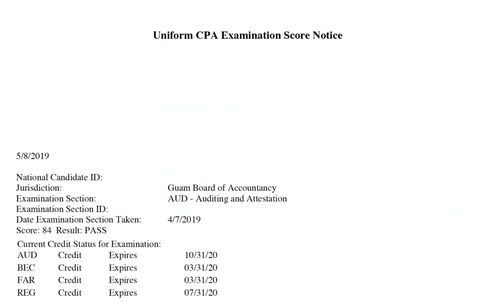

（図書館に行く用のカバンに乗り邪魔をする愛犬）

（4科目合格の写真）
こんにちは。 今日は大学生がCPAを目指すべき理由についてお話しできればと思います。
包み隠さず言えば、きっかけは就活の際の差別化になると思ったからです。 個人的にはCPAは - 会計領域の専門性の証明 - 英語能力の証明
が同時にできる資格だと思っています。
そしてその2つの証明ができれば、就職市場でも自己の差別化をすることができると考えたわけです。
一つ目の会計領域の専門性について、CPAはAuditor（監査人）として仕事に要求されるレベルの知識を求めています。 そこには、財務諸表の構成要素への理解から、実際の財務諸表の作成への流れ、そしてその読み取り方まで広範な知識を必要としています。 そのため、CPAを取得することは一企業の営業活動を数字として書き起こし、そこに齟齬がないことを証明できる能力を獲得することを意味するのです。 大学卒表時にそこまでの能力を有していることを証明できれば、間違いなく自分の武器になりうる事でしょう。
次に二つ目の英語能力の証明について、実はCPAは会計だけでなく、米国における法規制や監査論、マネジメントやファイナンスについて勉強します。 そしてそれらの科目全てを”英語”で学習し理解する事で、自ずと英語能力の向上が達成される事でしょう。 そのため、CPAを保有している事は、単に専門領域がある事を証明するにとどまらず、高度な専門知識を”英語”で運用できる事をも意味します。 CPA試験は以下の4科目で構成されています。
- Financial Accounting and Reporting (FAR)
FARは所謂企業の財務会計（社外に公表する数字）を始め、政府会計についても学習します。 しかし純粋な会計についてはこの科目のみとなり、他3科目は会計を軸に周辺的な知識を身につけていくことを目的としています。 - Business Environment and Concepts (BEC)
BECは管理会計（社内でのみ利用される数字）を中心に、ITや経済学、マネジメントにファイナンスなど幅広く学ぶことになります。 - Audit and Attestation (AUD)
AUDはその名前の通り、監査業務と証明業務（監査業務の簡易版）を学びます。 - Regulation (REG)
REGはビジネス法と税法の二本立てになっています。
今回は私が大学在学中にCPAを目指し始めた理由をお話ししました。 少しでも参考になれば幸いです。
t4ki